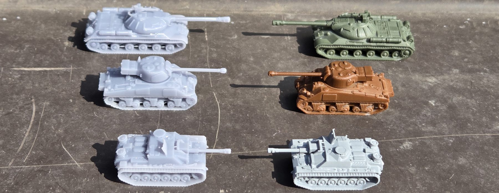
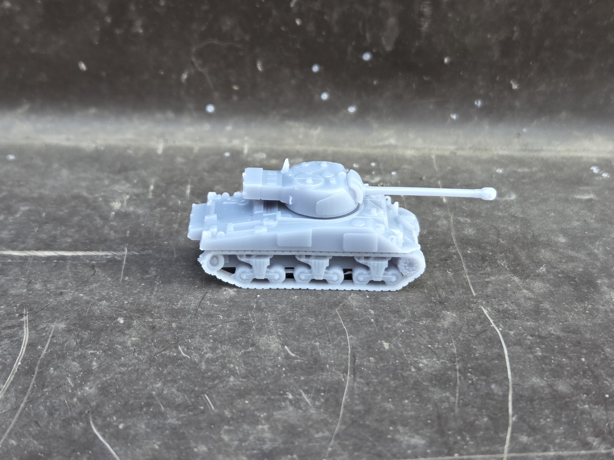
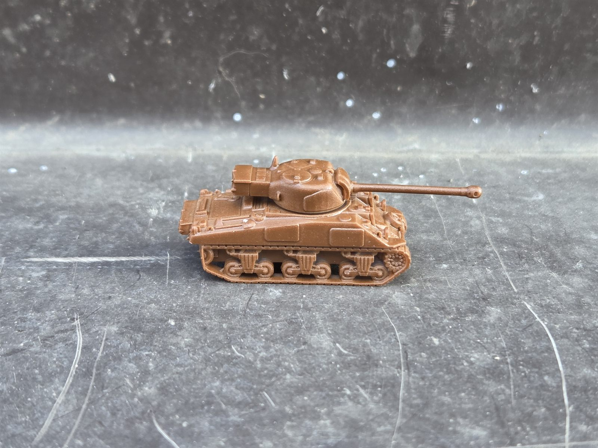

Two finish options, depending on how much hobby work you want to do
MiniTankForge models are available as either unpainted prints or prints with a base coat. This page explains what each option means so you can choose the finish that fits your project.

Unpainted

Unpainted models are supplied as clean 3D printed miniatures without a paint layer added. They are a good choice if you want to do your own priming, painting, weathering, and finishing.
Base coat

Base coat models receive a simple first paint layer to give the miniature a more finished look right away and reduce prep work before further painting.
By default, base coat colors follow the nation of the vehicle. For example, German tanks are usually grey, US tanks brown, and Russian tanks green. If you want a different color option, you can contact me and request it.
Side-by-Side Comparison
Use this quick comparison to decide which finish matches your hobby style.
| Feature | Unpainted | Base coat |
|---|---|---|
| Surface finish | Raw printed model, ready for your own prep and paint | Includes a simple initial paint layer |
| Best for | Full hobby painting and custom finishing | Faster tabletop prep or easier paint starting point |
| Painting work | More work, but maximum control | Less prep before adding your own details |
| Look out of the box | Plain and unfinished | More complete and presentation-ready |
You want full control
Choose unpainted if you enjoy priming and painting from scratch, want to match a specific army scheme, or prefer to handle every stage of finishing yourself.
You want a head start
Choose base coat if you want less prep work, want the model to look more finished sooner, or want a practical starting point before adding camouflage, shading, and details.
Compare finishes, then browse tanks or sets
Once you know which finish you want, continue to the actual product pages.
Browse TanksReady to request a finish option?
Mention the tank or set, scale, finish, and quantity when you contact me directly.
How This Works